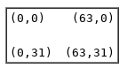

0.1 - このドキュメントを読むにあたって
このドキュメントを執筆するにあたり、なるべく簡単に情報が簡単にみつかるように務めた
- 16進数の隣には例えば"0x200 (512)."のようにカッコ内に10進数を併記するようにしている
- イタリックの文字は変数の値を示している(例えば"Vx,"のxは4ビット値)
- まず覚えておくべきことは、このドキュメントの[TOC]をクリックするとTable of contentsに飛べることだ
- そして、すでにクリックしたリンクはグレー、そうでないのはブルーになる
1.0 Chip-8について
「Chip-8のエミュレータを書いているんだ」と聞いた人の返答はいつもこうだ「Chip-8って何？」
Chip-8は1970年代後半から1980年代にDIYコンピューター用に設計されたシンプルでインタプリタなプログラミング言語である。例えば、COSMAC VIP、DREAM 6800、ETI 660だ。これらのコンピューターはテレビをディスプレイに使用するよう設計され、1から4KのRAMを持ち、16個の16進数キーボードを持っている。インタプリタ自体は512バイトのメモリに収まり、16進数で書かれたChip-8のプログラムはさらに小さい。
1990年代初頭にChip-8言語はAndreas Gustafssonという男によって復活した。AndreasはHP48 graphing calculatorのためにChip-8インタプリタを書いた。HP48はゲームを高速に実行するような機構をもっていなかったが、そこで上手くいったのはChip-8だった。その後、Chip-8からSuper Chip-8が生まれ、より高い解像度やその他グラフィック系の改善が入った。 このChip-8はMS-DOS、Windows 3.1、Amiga、HP48、MSX、Adam、ColecoVision等たくさんのプラットフォームで新しいChip-8インタプリタが生まれるきっかけとなった。私はPaul Robsonの実装をウェブで見かけたことをきっかけにChip-8を書くようになった。
このドキュメントは私がChip-8インタプリタを書くために集めた全ての情報を記したものである。
Chip-8の仕様
2.1 メモリ
Chip-8は0x000(0)から0xFFF(4095)の4KB (4,096バイト)のRAMを持つ。最初の512バイト0x000から0x1FFはインタプリタ自身が使う領域なのでプログラマでは使用してはならない。
ほとんどのChip-8用プログラムは0x200(512)から、いくつかの実装は0x600(1536)から始まる。0x600(1536)始まるプログラムはETI660用である。
Memory Map:
+---------------+= 0xFFF (4095) End of Chip-8 RAM
| |
| |
| |
| |
| |
| 0x200 to 0xFFF|
| Chip-8 |
| Program / Data|
| Space |
| |
| |
| |
+- - - - - - - -+= 0x600 (1536) Start of ETI 660 Chip-8 programs
| |
| |
| |
+---------------+= 0x200 (512) Start of most Chip-8 programs
| 0x000 to 0x1FF|
| Reserved for |
| interpreter |
+---------------+= 0x000 (0) Start of Chip-8 RAM
2.2 レジスタ
Chip-8は16個の8ビット汎用レジスタを持っており、本ドキュメントではVx(xは16進数で0からFまで)と表記する、もう一つ16ビットのIというレジスタがある。Iはメモリアドレスの格納のために使われる。下位12ビットのみ通常使われる。
VFレジスタはプログラムから通常直接使われず、いくつかの命令のフラグとして使われる。詳しくは3.0 命令を参照のこと。
Chip-8には二つの特別な8ビットレジスタがある、delayとサウンドタイマーである。これらのレジスタがゼロ以外の場合、60Hzの速度で自動的にデクリメントされていく。
また、プログラムからアクセス不可なレジスタ(pseudo-registers)がある。プログラムカウンタPCは16ビットで現在の実行アドレスを格納する。スタックポインタSPは8ビットでスタックの先頭のインデックスを表す。
スタックは16個の16ビットの配列で、インタプリタのサブルーチンのリターンアドレスを格納する。Chip-8は16段階のサブルーチンの呼び出しが可能である。
2.3 キーボード
Chip-8の最初のコンピュータには以下のような16進数キーボードがあった
| 2 | 2 | 3 | C |
| 4 | 5 | 6 | D |
| 7 | 8 | 9 | E |
| A | 0 | B | F |
このレイアウトは今日のプラットフォーム合うように様々な形にマッピングされた。
2.4 ディスプレイ
最初のChip-8実装では64x32ピクセルのモノクロディプレイが使われた。

ETI660等のインタプリタでは64x48や64x64ピクセルモードもあるらしいが、私の知る限り、それらのモードをサポートするChip-8実装は今のところない。最近ではSuper Chip-48というHP48計算機のインタプリタが128x64ピクセルモードを備えているそうだ。
Chip-8はスプライトを使ってスクリーン上に描画を行う。スプライトはバイト列で描画したい対象のバイナリ表現である。Chip-8のスプライトは15バイトまで可能でそのサイズは8x15になる。
Chip-8のプログラムは0からFまでの文字を表すスプライトのプリセットを使用することができる。それらは5バイト長で8x5ピクセルで、インタプリタのメモリの(0x000から0x1FF)に格納されている。

タイマーとサウンド
Chip-8はDelayタイマーとサウンドタイマーを持っている。
DelayタイマーはDelayタイマーレジスタ(DT)がゼロ以外の時に有効である。Chip-8は60HzでDTをデクリメントし、DTが0になると無効となる。
サウンドタイマーはサウンドタイマーレジスター(ST)がゼロ以外の時に有効である。STは60Hzでゼロになるまでデクリメントされ、その間Chip-8はブザー音を鳴らす。
Chip-8のサウンドは一つの音のみで、鳴らし方はChip-8の実装者が好きに決めてよい。
Chip-8の命令セット
0nnn - SYS addr
machine code routineのnnnにジャンプする。この命令はChip-8が最初に実装された古いコンピュータで使われたが、最近はもう使われていない。
00E0 - CLS
ディプレイをクリアする。
00EE - RET
サブルーチンに戻る。プログラムカウンターをスタックの一番上のアドレスにセットし、スタックポインターから1を引く。
1nnn - JP addr
アドレスnnnにジャンプする。インタプリタはプログラムカウンタをnnnにする。
2nnn - CALL addr
アドレスnnnのサブルーチンをCallする。インタプリタはスタックポインターをインクリメントし、プログラムカウンタにnnnをセットする。
3xkk - SE Vx, byte
Vx = kkの場合、次の命令をスキップする。インタプリタはレジスタVxとkkを比較し、二つが等しいならプログラムカウンタを2進める。
4xkk - SNE Vx, byte
Vx != kkの場合、次の命令をスキップする。インタプリタはレジスタVxとkkを比較し、二つが異るならプログラムカウンタを2進める。
5xy0 - SE Vx, Vy
Vx = Vyの場合、次の命令をスキップする。インタプリタはレジスタVxとVyを比較し、二つが等しいならプログラムカウンタを2進める。
6xkk - LD Vx, byte
Vxにkkをセットする。インタプリタはレジスタVxにkkの値をセットする。
7xkk - ADD Vx, byte
VxにVx + kkをセットする。インタプリタはレジスタVxにkkの値を加算する。
8xy0 - LD Vx, Vy
VxにVyをセットする。インタプリタはレジスタVxにVyの値をセットする。
8xy1 - OR Vx, Vy
VxにVx OR Vyをセットする。VxとVyのビット和をとり、Vxにセットする。ビット和は二つの値のビットを比較し、どちらかひとつでも1の場合は1、両方とも0の場合は0とする。
8xy2 - AND Vx, Vy
VxにVx AND Vyをセットする。VxとVyのビット積をとり、Vxにセットする。ビット積は二つの値のビットを比較し、両方とも1の場合は1、それ以外の場合は0とする。
8xy3 - XOR Vx, Vy
VxにVx XOR Vyをセットする。VxとVyの排他的ビット和をとり、Vxにセットする。排他的ビット和は二つの値のビットを比較し、等しくない場合は1、それ以外の場合は0とする。
8xy4 - ADD Vx, Vy
VxにVx + Vyをセットする。結果が8bit(255)より大きい場合Vfに1、それ以外の場合は0をセットする。Vxには下位8bitのみ保持する。
8xy5 - SUB Vx, Vy
Vx > Vyの場合Vfに1、それ以外の場合は0をセットする。VxにVx - Vyをセットする。
8xy6 - SHR Vx {, Vy}
Vxの最下位ビットが1だった場合はVfに1、それ以外の場合は0をセットする。VxにVxを2で割った(または右ビットシフト)値をセットする。
8xy7 - SUBN Vx, Vy
Vy > Vxの場合Vfに1、それ以外の場合は0をセットする。VxにVy - Vxをセットする。
8xyE - SHL Vx {, Vy}
Vxの最上位ビットが1の場合Vfに1、それ以外の場合は0をセットする。Vxに2をかけた(または左ビットシフト)値をセットする。
9xy0 - SNE Vx, Vy
Vx != Vyの場合、次の命令をスキップする。つまり、プログラムカウンタを2インクリメントする。
Annn - LD I, addr
Iにnnnをセットする。
Bnnn - JP V0, addr
nnn + V0のアドレスにジャンプする。つまり、プログラムカウンタにnnn + V0をセットする。
Cxkk - RND Vx, byte
Vxに0~255の乱数 AND kkをセットする。AND演算については8xy2を参照。
Dxyn - DRW Vx, Vy, nibble
アドレスIのnバイトのスプライトを(Vx, Vy)に描画する。Vfにはcollision(後述)をセットする。
アドレスIのnバイトのスプライトを読み出し、スプライトとして(Vx, Vy)に描画する。スプライトは画面にXORする。このとき、消されたピクセルが一つでもある場合はVfに1、それ以外の場合は0をセットする。スプライトの一部が画面からはみ出る場合は、逆方向に折り返す。XORについては8xy3に詳しい。また、ディプレイの仕様に関しては2.4 Displayを参照のこと。
Ex9E - SKP Vx
Vxが押された場合、次の命令をスキップする。
キーボードををチェックし、Vxの値のキーが押されていればプログラムカウンタを2インクリメントする。
ExA1 - SKNP Vx
Vxが押されてない場合、次の命令をスキップする。
キーボードををチェックし、Vxの値のキーが押されていなけ入ればプログラムカウンタを2インクリメントする。
Fx07 - LD Vx, DT
VxにDelay timerの値dtをセットする。
Fx0A - LD Vx, K
押されたキーをVxにセットする。
キーが入力されるまで全ての実行をストップする。キーが押されるとその値をVxにセットする。
Fx15 - LD DT, Vx
Delay timer dtにVxをセットする。
Fx18 - LD ST, Vx
Sound timer stにVxをセットする。
Fx1E - ADD I, Vx
IにI + Vxをセットする。
Fx29 - LD F, Vx
IにVxのスプライト(fontset)のアドレスをセットする。
Iの値にVxの値に対応するスプライト(fontset)のアドレスをセットする。詳しくはDisplayを参照。
Fx33 - LD B, Vx
アドレスI, I+1、I+2にVxのBCDをセットする。
アドレスIにVxの下位3桁目の値をセットする。I+1には下位2桁目の値をセットし、I+2には下位1桁目の値をセットする。
Fx55 - LD [I], Vx
V0からVxまでの値をIから始まるアドレスにセットする。
Fx65 - LD Vx, [I]
アドレスIから読んだ値をV0からVxにセットする。
インタプリタ
ウェブ上にあるChip-8の実装を以下に示す。
| Title | Version | Author | Platform(s) |
|---|---|---|---|
| Chip-48 | 2.20 | Anrdreas Gustafsson | HP48 |
| Chip8 | 1.1 | Paul Robson | DOS |
| Chip-8 Emulator | 2.0.0 | David Winter | DOS |
| CowChip | 0.1 | Thomas P. Greene | Windows 3.1 |
| DREAM MON | 1.1 | Paul Hayter | Amiga |
| Super Chip-48 | 1.1 | Based on Chip-48, modified by Erik Bryntse | HP48 |
| Vision-8 | 1.0 | Marcel de Kogel | DOS, Adam, MSX, ColecoVision |
Credits
このドキュメントはThomas P. Greeneによって編集されたが、 以下を内容を含んでいる。
- 私自身がしたハック。
- David WinterのChip-8エミュレータのドキュメント
- Christian EgebergのChipperのドキュメント
- Marcel de Kogelのソースコード
- Paul HayterのDREAM MONのドキュメント
- Andreas GustafssonのChip-48ドキュメント